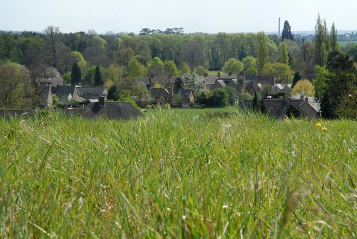

	<div id="oneCol" class="row">
    <div class="large-12 columns">
        <div class="medium-10 medium-offset-1 end columns">
			<h3>'Voices from the Falling Sky'  Exhibition (2007-2008)</h3>
        <p>I was commissioned by <a href="../../links/index.html">Oxfordshire Theatre Company</a> to respond visually to interviews made with people from rural Oxfordshire when questioned about the changing countryside. These same interviews formed the basis for a play written by their last Artistic Director Brendan Murray &#8216;The Falling Sky&#8217;, and performed during 2007.
Exhibition at <a href="../../links/index.html">Oxfordshire Museum</a>, Oxfordshire ended April 2008.<br />
<strong>June 2009</strong>, larger versions of 14 of the images are permanently
displayed at the new Churchill Cancer Hospital in Oxford.</p>
		</div>
		<div class="center">

        <a href="voices001.html" title="View next Voices photograph"></a>


	<p>village scene
    <br />
    <span class="links"><a href="voices001.html">next</a></span></p>
        </div>
     </div>
</div>


